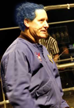
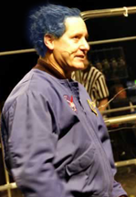

Robotics Alliance Project Management
Mark León, Manager of the NASA Robotics Alliance Project, NASA Ames Research Center
Mark Joseph León received his B.S. degree in electrical engineering from San Jose State University. Mr. León was accepted in to the Collegiate Electrical Engineering Honor Society Eta Kapp Nu. In 1985 he achieved the status of All American by taking a silver metal in the Collegiate National Judo Championships. He has a first degree Black Belt in Judo and a second-degree Black Belt in Tae Kwon Do.
Since the 1980's, Mr. León has held a number of positions at NASA focused on technical advances, including implementation of the Trans-Atlantic TCP/IP network links between US and Europe, design of permanent high-speed data connectivity to Antarctica supporting NASA's robotics program, and the first high speed internet link to the Arctic, where he conducted a series of live video broadcasts from the Coast Guard Cutter Polar Star near the North Pole supporting NASA's robotics program.
In 1999, Mr. León developed NASA's Robotics Education Project (now called the Robotics Alliance Project) under his mentor Dave Lavery, which has reached out to over 100,000 students nat ionwide using FIRST robotics and BOTBALL robotics competitions. Each year Mr. León MC's these national competitions to about 20,000 students sporting his NASA jacket and blue hair. From 2001-2006, Mr. León was the Deputy Director and then the Director ofEducation at Ames Research Center supporting ten states from Hawaii to Montana. Mark continues to manage the Robotics Alliance Project inspiring students across America.
Since the 1980's, Mr. León has held a number of positions at NASA focused on technical advances, including implementation of the Trans-Atlantic TCP/IP network links between US and Europe, design of permanent high-speed data connectivity to Antarctica supporting NASA's robotics program, and the first high speed internet link to the Arctic, where he conducted a series of live video broadcasts from the Coast Guard Cutter Polar Star near the North Pole supporting NASA's robotics program.
In 1999, Mr. León developed NASA's Robotics Education Project (now called the Robotics Alliance Project) under his mentor Dave Lavery, which has reached out to over 100,000 students nat ionwide using FIRST robotics and BOTBALL robotics competitions. Each year Mr. León MC's these national competitions to about 20,000 students sporting his NASA jacket and blue hair. From 2001-2006, Mr. León was the Deputy Director and then the Director ofEducation at Ames Research Center supporting ten states from Hawaii to Montana. Mark continues to manage the Robotics Alliance Project inspiring students across America.
Above all, remember how we got here...
|
Go FIRST!!!
|